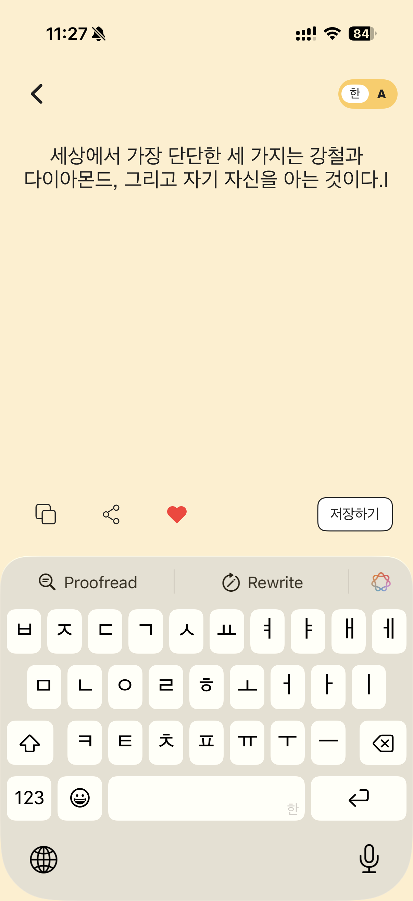
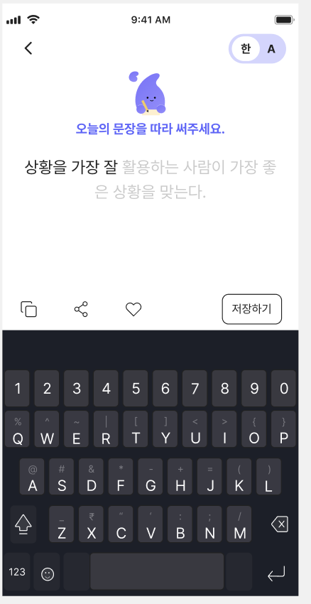
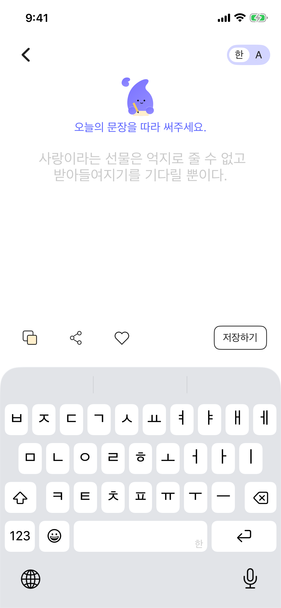
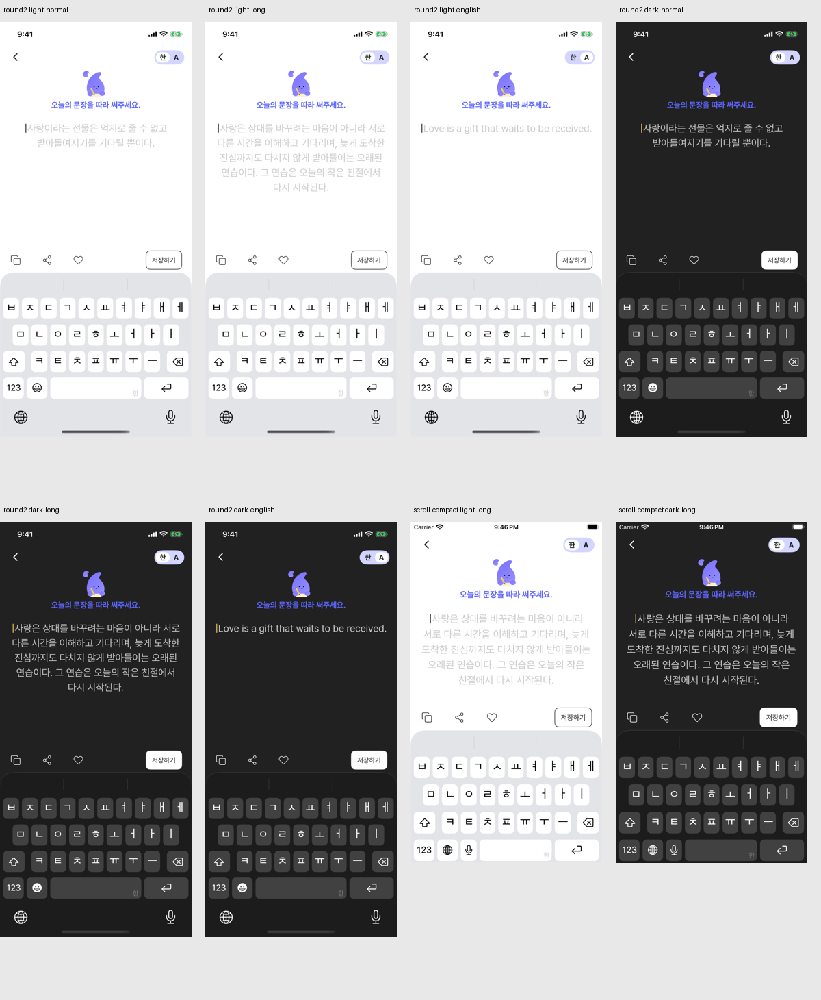
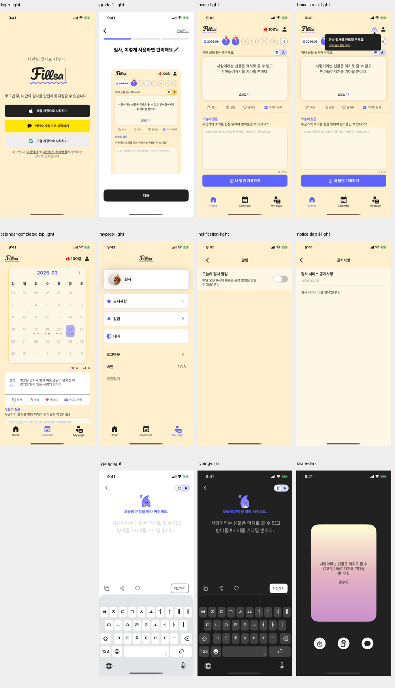
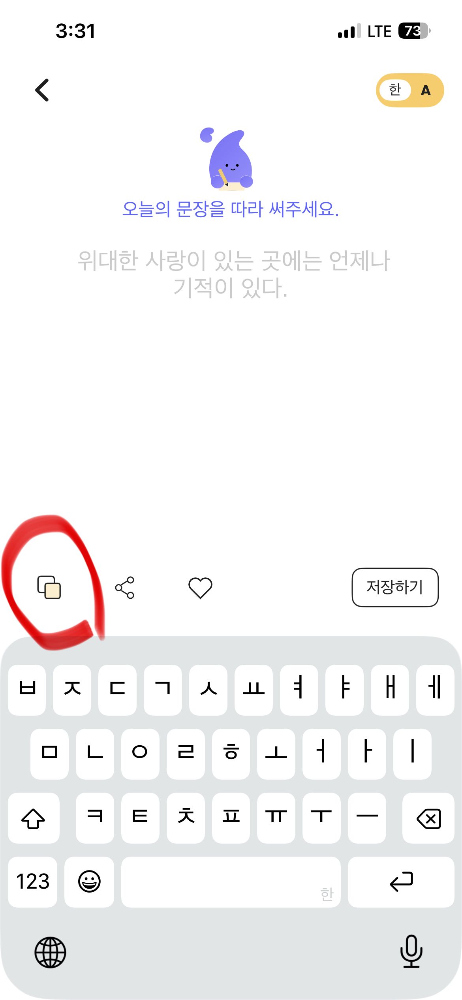
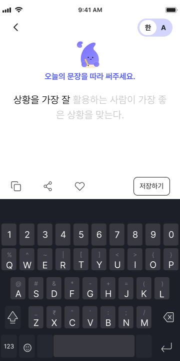
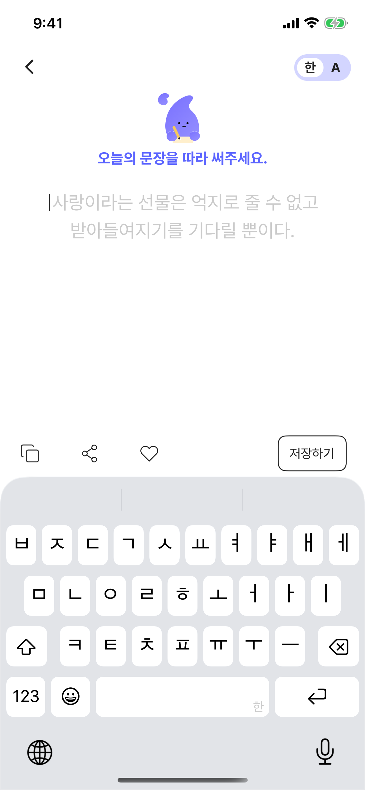

필사 작성 화면 > 캐릭터 미적용
Notion 원본 이슈
원본 상태: In progress · 우선순위: 낮음 · 원본 플랫폼: Android/iOS · 이번 수정: iOS
Notion 본문 전문 · 최초 제보와 이후 진행 기록
<columns> <column ratio="50"> \[AS-IS\] - AOS  - iOS  </column> <column ratio="50"> \[TO-BE\] - 상단 캐릭터 + ‘오늘의 문장을 따라 써주세요.’  <empty-block/> </column> </columns> ## iOS 원인 분석 및 해결 계획 · 2026-10-25 분석일: 2026-10-25 (KST) \| 대상: iOS \| 코드 기준: Fiilsa 현재 checkout, HEAD 790e92a.<br>이번 기록은 원인 분석·해결 계획이다. 앱 코드는 수정하지 않았고 시뮬레이터/실기기·실서버 테스트도 실행하지 않았다. 코드로 확인된 사실과 런타임 확인이 필요한 추론을 구분했다. TCA의 State/Action/Reducer는 Android MVI의 화면 상태/이벤트/ViewModel 처리에 대응하며, View는 Jetpack Compose처럼 상태를 받아 화면을 그리는 부분이다. ### 원인과 근거 확인: TypingQuoteView.swift:21–45의 구성은 상단 뒤로가기/언어 전환 → TypingQuoteBodySection → Spacer → 하단 액션이다. topSection(:58–76)에도 캐릭터나 '오늘의 문장을 따라 써주세요.' 문구가 없다. TypingQuoteBodySection은 명언과 입력/커서만 그린다. 자산을 읽지 못한 문제가 아니라 해당 안내 영역이 화면 구성에 빠져 있다.<br>현재 2_home.md 타이핑 기획의 상단 설명에도 이 안내 영역이 명시되지 않아 화면 계획 보완이 필요하다. ### 해결 방안 최신 Figma의 해당 캐릭터·안내 문구 영역을 확인하고 원본 자산/색상 모드/위치를 화면 문서에 기록한다. TypingQuoteView의 해당 위치에 작은 안내 영역을 추가하거나 기존에 같은 Figma 컴포넌트가 있으면 재사용한다. 정적인 표시이므로 불필요한 TCA 상태나 별도 도메인 기능은 만들지 않는다. 입력창 포커스·한글 조합·언어 전환·저장 흐름을 보존한다. ### 영향 범위와 검증 계획 TypingQuoteView, 필요한 Bundle Assets, docs/screens/2_home.md의 타이핑 컴포넌트 목록 및 QA 기록. HomeUITests의 타이핑 fixture와 GlobalLoadingUITests의 키보드 시나리오를 활용해 Light/Dark, 키보드 노출, 작은 화면, 긴 명언, 글자 크기 확대 상태에서 안내와 저장 버튼 가림을 확인한다. ### Figma 기준 및 확인 사항 타이핑 Light https://www.figma.com/design/VdFocqyqTgevMVCQxwAQ2X Dark https://www.figma.com/design/VdFocqyqTgevMVCQxwAQ2X 기존 기준 이미지 docs/design-qa/assets/home-figma/2026-09-20-typing-light-2929-17920.png. 현재 Figma에 QA의 안내 영역이 반영되어 있는지 하위 레이어를 다시 확인한다. Android 캡처/자산은 iOS UI 기준으로 사용하지 않는다. ### 미검증 사항과 주의점 이 티켓은 Android/iOS 공통이지만 이번 분석 및 후속 작업 범위는 iOS다. 이번 상태 변경은 티켓 전체의 In progress이며 Android 해결·최종 완료를 의미하지 않는다. 실제 키보드/레이아웃 검증은 미실시. 구현 시작 전 화면별 기획에 Figma URL·프레임·컴포넌트·상태·QA 기록 링크를 확정한다. Figma 원본 전체 프레임을 확보하고 컴포넌트부터 수정한 뒤 조립 화면을 대조한다. docs/ui-redesign-workflow.md의 최대 5회 검증을 따르며 실제 캡처 대조 전에는 완료/Pass로 바꾸지 않는다. ## iOS 구현 진행 및 검증 · 2026-10-25 iOS TypingQuoteView에 Figma Light/Dark 원본 60pt 캐릭터와 ‘오늘의 문장을 따라 써주세요.’를 추가했다. Light 배경을 대상 Figma의 흰색으로 맞췄다. 입력 조합 처리 UIViewRepresentable은 유지한다. 필사 화면 진입·안내문구 UI 테스트 통과. 한글 키보드가 열린 전체 화면에서 캐릭터·안내·저장 버튼이 보이는 캡처 확보. Android 구현은 이번 작업 범위가 아니다. 공통 검증: iPhone 17e iOS 26.4.1에서 자동 테스트 140건 통과. QA 기록: docs/design-qa/2026-10-25-ios-qa.md. Figma 360pt와 런타임 390pt 및 기존 폰트/레이아웃 차이로 전체 화면 최종 수용은 Blocked이며, 티켓 상태는 In progress를 유지한다. 저장 팝업은 별도로 정책 확인 대기. ## iOS 구현 결과 정리 · 2026-10-25 iOS TypingQuoteView에 Figma Light/Dark 원본 60pt 캐릭터와 ‘오늘의 문장을 따라 써주세요.’를 추가했다. Light 배경을 대상 Figma의 흰색으로 맞췄다. 입력 조합 처리 UIViewRepresentable은 유지한다.<br>검증: 필사 화면 진입·안내문구 UI 테스트 통과. 한글 키보드가 열린 전체 화면에서 캐릭터·안내·저장 버튼이 보이는 캡처 확보. Android 구현은 이번 작업 범위가 아니다. 전체 단위·저장 팝업 UI 회귀: 142건 통과, 실패·skip 0 (Fiilsa-popup-final.xcresult). QA 원문·첨부·원인·수정·검증 결과를 docs/design-qa/2026-10-25-ios-qa-report.html에 정리한다. 시각 검증은 360/390pt 프레임·미등록 폰트·기존 배경 레이아웃 차이로 Blocked. 실계정 OAuth·실서버 v2·이미지 업로드/삭제는 미검증. 상태는 In progress 유지하며 UI 최종 완료를 의미하지 않는다. ## Android 원인 분석 및 해결 계획 · 2026-10-25 상태: Android 원인 분석·해결 방안 문서화 완료. 앱 수정·수정 후 검증 미실시. 이 페이지의 기존 iOS 구현 결과와 별도이며, 공통 티켓 전체 완료를 뜻하지 않습니다. 소스 stage HEAD 4934a13 + 기존 로컬 변경. 기존 설치 Android 1.0.31 (25), emulator-5554, API 35, 360×720px/160dpi에서 안내 누락을 확인했습니다. 설치 APK와 미커밋 소스의 동일성은 미확인입니다. 원인: TypingQuoteView.kt:177–212는 TopSection → top padding 28dp → BodySection으로 조립합니다. TopSection은 뒤로가기/언어 전환만, TypingQuoteBodySection은 명언/입력/커서만 표시합니다. 캐릭터 이미지 로딩 실패가 아니라 캐릭터·안내 문구를 그리는 영역 자체가 없습니다. 저장 결과 팝업의 별도 캐릭터는 입력 화면에 연결되지 않았습니다. Figma 직접 확인: Light https://www.figma.com/design/VdFocqyqTgevMVCQxwAQ2X / Dark https://www.figma.com/design/VdFocqyqTgevMVCQxwAQ2X 안내 그룹 Light 3087:28754 / Dark 3087:28984. Handwriting 캐릭터 60×60(3087:28737 / 3087:28985), ‘오늘의 문장을 따라 써주세요.’ Pretendard Bold 16/24, #5C65FF(3087:28753 / 3087:29001). 전체 360×720, 안내·본문 컨테이너 x20/y80/폭320, 안내 이후 본문 간격20. 해결 계획: 안내만 담당하는 작은 Compose 컴포넌트를 추가하고 TopSection과 BodySection 사이에 조립합니다. Figma 원본 자산을 사용하며 기존 팝업 자산 재사용은 동일성 확인 후 결정합니다. 현재 28dp 여백을 함께 조정해 Figma 위치를 맞춥니다. 정적 표시이므로 새 API·Repository·저장 상태는 필요하지 않습니다. BasicTextField 한글 조합/포커스/커서와 저장 계약은 유지합니다. 검증 계획: 안내 컴포넌트 Light/Dark Preview → 안내+본문 Preview → 360×720 실제 전체 화면 IME 열림/닫힘 비교. 한/영 전환·긴 문장·글자 크기 확대·한글 조합·저장 성공/실패/미완료·Home 복귀를 회귀 확인합니다. 영역 부족으로 Figma에 없는 스크롤/축소가 필요해지는 경우 제품 결정을 확인합니다. 이번에는 새 자동 테스트·Preview 렌더를 실행하지 않았고 증상 재현 캡처만 확보했습니다. 보고서: docs/design-qa/2026-10-25-android-new-qa-report.html#typing. QA 접수 원문과 AOS/iOS/TO-BE 첨부를 보존하고 Android 코드 근거·Figma 원본·재현 캡처·수정 계획을 포함했습니다. 근거 폴더: docs/design-qa/artifacts/2026-10-25-android-new-qa/. 현재 실제 해결 기록은 분석과 계획 수립이며 앱 구현 완료가 아닙니다. ### 제공 페이지 추가 조사 · 2026-10-25 사용자 제공 ‘v. 3.0’ 페이지(2438:3437)의 필사 Light2438:12875 / Dark2438:10034를 캡처했으며 캐릭터와 안내 문구가 없습니다. QA 원문에 대응하는 ‘리뉴얼 ver.1.0’의 기존 기준 2929:17920 / 3087:28815를 유지하고 버전 차이를 보고서에 기록했습니다. 안내 그룹 Light3087:28754 / Dark3087:28984에서 원본 SVG를 추출했습니다. 두 SVG는 width60/height60/viewBox0 0 60 60이고 SHA-256이 동일하여 단일 원본 재사용 가능합니다. 문구 ‘오늘의 문장을 따라 써주세요.’는 Pretendard Bold16/24, #5C65FF, 안내 그룹296×84, 안내 다음 본문 간격20입니다. 자산 및 조사 JSON: docs/design-qa/artifacts/2026-10-25-android-new-qa/. 보고서: docs/design-qa/2026-10-25-android-new-qa-report.html#figma-extraction. 이번에는 자산 추출·문서화까지 했으며 앱 연결·수정 후 검증은 미실시입니다.
제보 당시 첨부 3건입니다. 현재 구현 결과와 구분하며 Android 자료는 iOS UI 판단에 사용하지 않았습니다.


iOS 제보 이미지와 요청 이미지 보기


Notion 댓글
댓글 v2 재현·회귀 검증 · 2026-10-29
| 대상 | 실행·환경 | 결과 | 증거 |
|---|---|---|---|
| 복사 버튼 / 클립보드 | scripts/test-typing-copy.sh 6C263489-FBEE-4DC7-9904-55D99393D4ECiPhone 17e / iOS 26.4.1 / ko_KR | 통과. 버튼 탭 후 `사랑이라는 선물은 억지로 줄 수 없고 받아들여지기를 기다릴 뿐이다.` + 줄바꿈 + `존우든` 확인. | 실행별 xcresult 요약·클립보드 확인 |
| 안내·언어·본문 스크롤 | TypingLayoutUITests.testPromptAndSaveRemainAccessibleWithKeyboardLight/Dark, ko/en, 기본/긴 문장 | 1 통과 / 0 실패 / 0 skip. 안내·저장 접근성 및 본문 스크롤 전후 확인. | Light · Dark |
| Pretendard Regular/Bold 리소스 | TypographyResourceTests | 2 통과 / 0 실패 / 0 skip. Bold16 font load 포함. | 현재 실행 요약 |


문제와 재현 조건
Home fixture 실행 → 문장 카드 탭 → 필사 진입 → 키보드 표시 → 안내·저장 확인 → 한/영 전환. Light/Dark, 기본/긴 문장을 두 기기에서 실행했습니다. 최초 캐릭터 누락은 이미 이전 구현에서 해결되어 현재 재현되지 않았습니다. 실제 View를 사용한 fixture 검증이며 실계정·실서버 검증은 아닙니다.
이슈 원인
코드는 Pretendard를 이름으로 요청했으나 번들에 원본 글꼴과 UIAppFonts 등록이 없어 UIFont 로드가 nil이었습니다. 파일 등록 후 Regular/Bold의 실제 이름이 확인됐습니다. 기존 헤더는58pt, 목표는50pt이며 본문에는30pt 줄 높이 보정이 없었습니다. 하단의 수작업 아이콘도 원본과 달랐습니다.
폰트 로드 검사는 등록 전 2건 실패 → 등록 후 2건 통과했습니다. 등록을 끈 대조 빌드에서도 UIFont 로드 실패를 다시 확인했습니다. 최초 실패 로그 · 대조 실험
해결방법과 실제 수정
Info.plist,Resources/Fonts: Pretendard Regular/Bold 및 SIL OFL 라이선스 등록. 공식 원본 v1.3.9TypingQuoteView: 안내 컴포넌트 분리, 원본 캐릭터 색상 유지, 헤더와 하단 패딩·원본 아이콘 적용. 본문만 ScrollView로 감싸고 안내·하단 액션은 바깥에 유지. 스크롤 중 키보드 유지.TypingQuoteBodySection: 본문 줄 높이 여백 보정. 입력 조합 및 TCA reducer 계약 유지.TypographyResourceTests,TypingLayoutUITests: 번들 로드와 실제 키보드·언어·기기 배치 검증.
Compose의 fillMaxSize + padding + weight + verticalScroll처럼 부모가 제공한 공간을 사용합니다. 본문 ScrollView가 남는 높이를 채우며, fixedSize(horizontal:false, vertical:true)는 숫자로 크기를 고정하는 기능이 아니라 본문이 필요한 높이를 모두 사용하게 하는 설정입니다. SwiftUI의 frame(maxWidth/maxHeight: .infinity)는 고정 크기 지정이 아니라 사용 가능한 공간을 채우는 요청입니다. 아이콘·캐릭터는 원본 고유 크기를 유지합니다.
수정 전 · 목표 기준 · 수정 후
AS-IS · 수정 전 실제 결과


Figma · 목표 기준

TO-BE · 수정 후 실제 결과

검증 결과
| 검증 항목 | 실행 명령·절차·시각 | 실제 결과 | 증거 |
|---|---|---|---|
| 최종 본문 스크롤·저장·로딩 회귀 | TypographyResourceTests + TypingLayoutUITests + TypingResultUITests + GlobalLoadingUITests + 관련 Home 3건 2026-10-28 21:45 KST | 13 통과 / 0 실패 / 0 제외 | 실행 요약 |
| 최종 작은 기기 배치 | 375×667 / 본문 스크롤, 안내·저장 위치 유지 2026-10-28 21:46 KST | 1 통과 / 0 실패 / 0 제외 | 실행 요약 |
| 최종 큰 글자·긴 문장 | 375×667 / extra-extra-extra-large / 본문 스크롤 전후 2026-10-28 21:46 KST | 1 통과 / 0 실패 / 0 제외 | 실행 요약 |
| 1차 단위·Home·저장·로딩·기기 배치 | FiilsaTests + HomeUITests + TypingResultUITests + GlobalLoadingUITests + TypingLayoutUITests 2026-10-28 21:28 KST | 167 통과 / 1 실패 / 0 제외 | 실행 요약 |
| 작은 기기 · 375×667pt | iPhone SE 3 / TypingLayoutUITests / Light·Dark, 기본·긴 문장, 한·영 2026-10-28 21:32 KST | 1 통과 / 0 실패 / 0 제외 | 실행 요약 |
| 작은 기기 · 큰 글자 | 같은 기기 / extra-extra-extra-large / TypingLayoutUITests 2026-10-28 21:39 KST | 1 통과 / 0 실패 / 0 제외 | 실행 요약 |
| 공통 글꼴 화면 회귀 | iPhone 17e / FullScreenAuditUITests / 실제 View fixture 캡처 2026-10-28 21:36 KST | 8 통과 / 0 실패 / 0 제외 | 실행 요약 |
| 툴팁 대조 · 등록 OFF | 빌드 복사본의 UIAppFonts만 제거, 동일 SE 기기에서 툴팁 검사 2026-10-28 21:37 KST | 0 통과 / 1 실패 / 0 제외 | 실행 요약 |
| 툴팁 대조 · 등록 ON | 정상 빌드, 동일 SE 기기에서 동일 툴팁 검사 2026-10-28 21:38 KST | 0 통과 / 1 실패 / 0 제외 | 실행 요약 |
| 컴포넌트 | 검증 결과 |
|---|---|
| 캐릭터·안내 | Light/Dark 원본 SVG 해시 일치. 자연 크기 60pt, Bold16, 보라색 안내. 수정 후 실제 화면에서 얼굴·연필·문구 표시 확인. |
| 부모 배치 | 고정 화면/본문 폭·높이 없음. 좌우20pt, 안내→본문20pt, 남는 높이는 본문 ScrollView. 390×844 및 375×667에서 키보드 위 저장 접근 확인. |
| 본문·입력 | Pretendard Regular20, 기본 줄 높이30 기준 여백. 한·영 전환과 기존 상태 유지. 큰 글자는 본문만 스크롤. 커서 문자 폭에 따른 줄바꿈 차이는 남음. |
| 상단·액션 | 원본 뒤로가기/복사/공유/하트 적용. 저장 텍스트+패딩. 기존 공용 언어 토글은 자연 크기가 Figma70×36보다 작아 정합성 미완료. |
기기·상태별 실제 화면

위 모음은 비율을 유지한 축소 보기입니다. 390pt 원본·촬영 시각 · 375pt 원본·촬영 시각


큰 글자·긴 문장 · 본문 스크롤 전후


공통 글꼴 회귀 · 대표 화면

1차: 하위 안내·본문320/350pt 렌더와 조립 화면을 비교했습니다. 컴포넌트 렌더의 1px 입력 뷰 표시는 ImageRenderer 한계로 실제 전체 화면과 구분했습니다. Dark 이미지에는 original 렌더링을 지정한 뒤 얼굴·연필 표시를 실제 화면으로 재확인했습니다. 2차: 본문 스크롤 승인 후 두 기기의 기본·큰 글자·긴 문장·언어 전환 관련15건이 통과했습니다. 큰 글자의 마지막 문장까지 스크롤로 접근하는 것을 실제 캡처로 확인했습니다. 360×720과 실제 기기 크기는 다르므로 전체 픽셀 일치로 판정하지 않습니다.
남은 항목과 다음 행동
- 1차에서 발견한 작은 기기+큰 글자+긴 문장의 본문 잘림. 안내·저장 접근 검사 자체는 통과했으나 전체 문장 가독성은 통과하지 못했습니다. 이후 “본문만 스크롤하도록 허용” 승인을 받아 2차에서 본문만 스크롤하도록 수정했습니다. 아래 전후 캡처와 최종 실행 결과를 참조하십시오.
- 공용 언어 토글의 Figma 크기 차이, 커서 폭에 따른 동일 문장 줄바꿈, 공통 폰트 적용 화면의 기존 시각 차이가 남아 전체 UI 수용은 보류입니다.
- 홈 툴팁 위치 검사는 글꼴 등록 ON/OFF 모두 같은 기기에서55 vs63.5로 실패했습니다. 이번 등록만으로 생긴 실패는 아니며 이슈1에서 홈 툴팁을 수정하지 않았습니다.
- 실기기, 접근성 최대 글자 크기, 임의 길이 문장, 실제 한글 조합·실서버 저장은 이번 검증으로 보장하지 않습니다.
- 이슈2 저장 팝업, 3 온보딩, 4 로그인은 각각 독립 설계·승인 후 진행합니다. Notion 내용·상태는 변경하지 않았습니다.
SooJi · @보훈 강
작성 2026-10-29 06:27 UTC · 수정 2026-10-29 06:43 UTC
보훈님, 캐릭터 이제 잘 나옵니당. 다만, 아래의 내용들이 적용되어 있지 않아 확인 부탁드립니다!

댓글 첨부 원본 HEIC · 댓글 API 조회 기록
현재 작업본은 댓글의 세 항목을 재현하지 못했습니다. Bold 안내가 보이고, Figma 복사 노드와 현재 아이콘은 노란 채움 없는 단색이며, 클립보드 검사에서 선택 문장+줄바꿈+저자를 확인했습니다. 댓글 첨부 화면은 달라 보이지만 그 캡처의 앱 버전/커밋이 없어 동일 작업본인지 판별할 수 없습니다. v2에서 앱 UI 코드는 바꾸지 않고 재현 UI 테스트와 스크립트만 추가했습니다. Notion은 In progress로 유지합니다.
댓글 당시 QA 첨부
Figma 현재 Light 기준

현재 작업본 · 복사 버튼 실행 후

실행 증거: 현재 Light · 현재 Dark · Figma 복사 노드 · 복사 회귀 검사 스크립트 · v2 조사·승인·검증 기록.